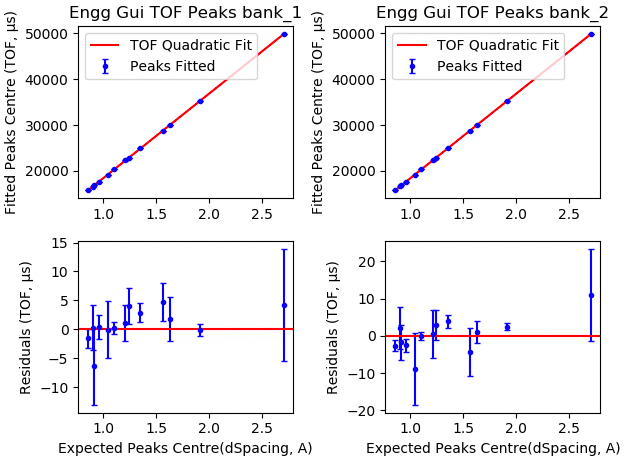
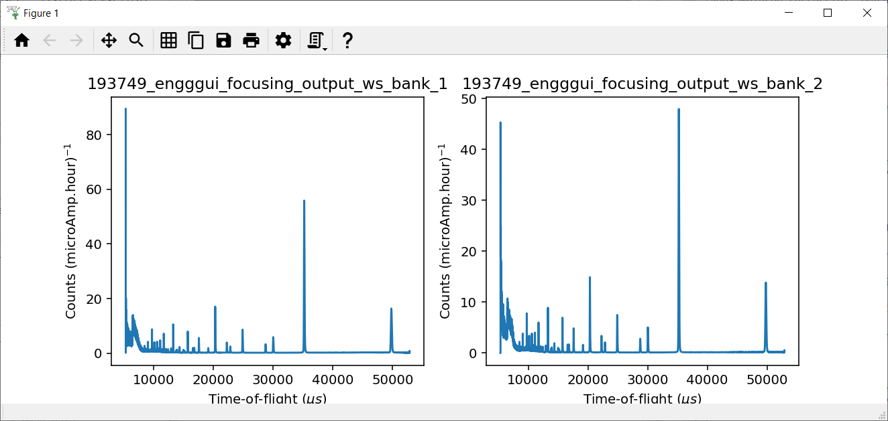
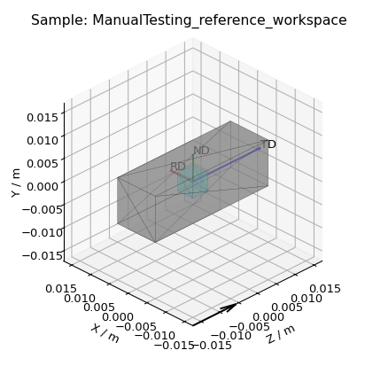
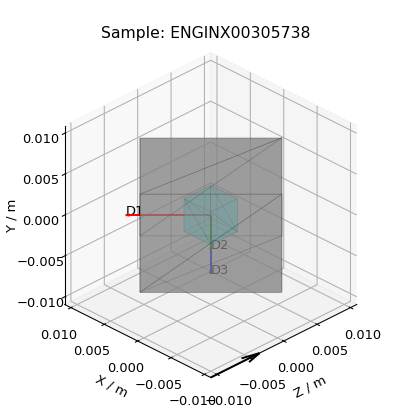
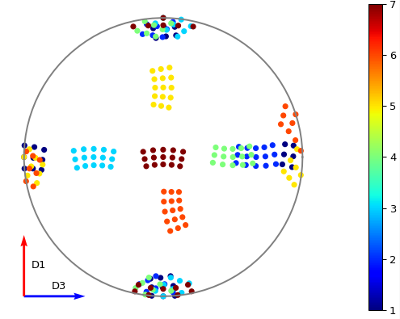
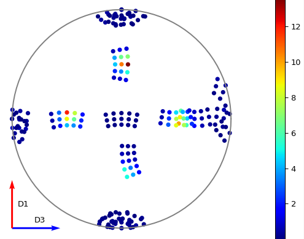
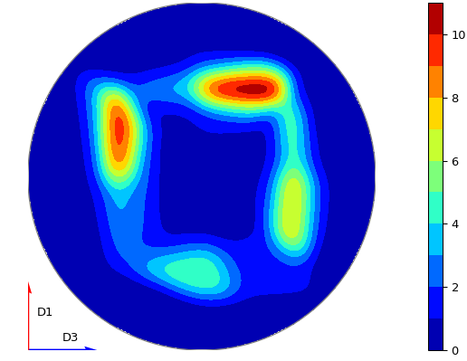

Engineering Diffraction Testing#
Preamble#
This document is tailored towards developers intending to test the Engineering Diffraction interface.
Runs can be loaded from the archive, however it is possible that different run numbers will be needed as older runs may be deleted.
The nexus files for all the runs used below are available from
<mantidBuildDir>/ExternalData/Testing/Data/DocTestpathData loading time from the archive can be reduced by adding the above path at
File->Manage User Directories->Data Search Directoriesbefore starting the tests.
Overview#
The Engineering Diffraction interface allows scientists using the EnginX instrument to interactively process their data. There are 5 tabs in total. These are:
Run Processing- This is where a cerium oxide run is entered to calibrate the subsequent data, which can also be focussed into a single spectrum.Absorption Correction- This is where the experimental can be corrected for beam attenuationFitting- Where peaks can be fitted on focused dataTexture- Where pole figure’s can be generated for experimental runs and their fitted peaksGSAS II- Run a basic refinement on the GSASIIscriptable API
Especially to aide GSASII testing, please test on an ENGINX IDAaaS instance.
The tests are designed to be run from a starting point where no settings relating to the Engineering Diffraction Gui
have been saved in the Mantid Workbench ini file. This file is in C:\Users\<fed id>\AppData\Roaming\mantidproject on
Windows and ~/.config/mantidproject/ on linux. To ensure there are no saved settings open up the file mantidworkbench.ini
and delete the settings with names starting with EngineeringDiffraction2 from the CustomInterfaces section
Test 1 - Calibration and focussing#
This test follows the simple steps for calibrating and focusing in the Engineering Diffraction Gui.
Calibration#
Ensure you can access the ISIS data archive.
Open the Engineering Diffraction gui:
Interfaces->Diffraction->Engineering DiffractionOn opening the gui the
Create New Calibrationoption should be selected.Open the settings dialog from the cog in the bottom left of the gui.
Set the
Save Locationto a directory of your choice.Check that the
Full Calibrationsetting has a default path to a .nxs file (currentlyENGINX_full_instrument_calibration_193749.nxs)Close the settings window
For the
Vanadium #enter307521.For the
Calibration Sample #enter305738.Tick the
Plot Calibrated Workspaceoption.Click
Calibrate, after completing calibration it should produce the following plot.
{kind=link}

Check that in your save location there is a Calibration folder containing three .prm files ENGINX_305738 with the suffixes _all_banks, _bank_1, _bank_2.
Close the Engineering Diffraction gui and reopen it. The
Load Existing Calibrationradio button should be checked on theCalibrationtab and the path should be populated with the _all_banks.prm file generated earlier in this test.In the
Load Existing Calibrationbox browse to the _bank_2.prm file and click theLoadbutton.
Focus#
Now let’s look at the
Focusgroup.For the
Sample Run #use305761and leaveVanadium #set to307521.Tick the
Plot Focused Workspaceoption and clickFocus. It should produce a plot of a single spectrum for bank 2.In the
Calibrationgroup select an existing calibration file for both banks e.g. ENGINX_305738_all_banks.prm and clickLoad.Click the
Focusbutton, after completing calibration it should produce a plot.
{kind=link}

Check that in your save location there is a Focus folder containing the following files:
ENGINX_305738_305721_all_banks_dSpacing.abc
ENGINX_305738_305721_all_banks_dSpacing.gss
ENGINX_305738_305721_all_banks_TOF.abc
ENGINX_305738_305721_all_banks_TOF.gss
ENGINX_305738_305721_bank_1_dSpacing.nxs
ENGINX_305738_305721_bank_1_TOF.nxs
ENGINX_305738_305721_bank_2_dSpacing.nxs
ENGINX_305738_305721_bank_2_TOF.nxs
CombinedFiles/ENGINX_305761_236516_bank_dSpacing.nxs
There should also be a
CombinedFilesfolder which should contain:ENGINX_305761_307521_bank_dSpacing.nxs
ENGINX_305761_307521_bank_2_dSpacing.nxs
Test 2 - RB Number#
This test covers the RB number.
Enter a string into the
RB Numberbox.Follow the steps of Test 1, any output files (for non-texture ROI) should now be located in both [Save location]/User/[RB number] and [Save location] (for texture ROI the files will be saved in the first location if an RB number is specified, otherwise they will be saved in the latter - this is to reduce the number of files being written).
Test 3 - Cropping#
This test covers the Cropping functionality in the Run Processing tab.
Change the
RB NumbertoNorth, this is purely to separate the cropped output files into their own space.Go to the
Run Processingtab, selectCreate New Calibrationand tick theSet Calibration Region of Interestoption. In the drop downRegion of Interestselect1 (North).Check the
Plot Calibrated Workspacecheckbox and clickCalibrate.The generated figure should show a plot of TOF vs d-spacing and plot showing residuals of the quadratic fit.
Check that only one .prm and one .nxs output file was generated.
Click the
Focusbutton.Change the
RB numberto Custom.Set the
Region Of InteresttoCrop to Spectraand usingCustom Spectra1200-2400(these spectrum numbers correspond to the South Bank). Please note that some custom spectra values may cause the algorithms to fail. ClickCalibrateand a similar plot to before should appear but with only 2 subplots.Set the
Region of InteresttoTexture (20 spec)and clickCalibrate- there should be 20 spectra per run (5 tiled plot windows, 4 spectra per window).
Test 4 - Absorption Correction#
This test covers the sample setting functionality in the Absorption Correction tab.
Change the
RB NumbertoManualTesting.Go to the
Absorption Correctiontab, inSample Run(s)enter305738and clickLoad FilesA row should have been added to the table with
Run: ENGINX00305738,Shape: Not Set,Material: Not set, andOrientation: defaultClick
Create Reference Workspace,ManualTesting_reference_workspaceshould now be listed asReference FrameIn the
Sample Shapesection clickLoad Shape onto single WSMake sure
InputWorkspaceandOutputWorkspaceare set toManualTesting_reference_workspaceSet
Filenameto a suitable file (<mantidBuildDir>/ExternalData/Testing/Data/UnitTest/cube.stl) andScaletommThere should now be a
Viewbutton next toShapein theReference Workspace InformationClick this
ViewbuttonIf you have used the example STL you should get the following:
{kind=link}

Now click
Set Shape onto single WSand setInputWorkspaceagain toManualTesting_reference_workspaceSet
ShapeXMLto:
..testcode:
<cuboid id='some-cuboid'> \
<height val='0.015' /> \
<width val='0.012' /> \
<depth val='0.012' /> \
<centre x='0.0' y='0.0' z='0.0' /> \
</cuboid> \
<algebra val='some-cuboid' /> \
Click
Set Sample Material, setInputWorkspacetoManualTesting_reference_workspaceandChemicalFormulatoFeand clickRunClick
Set Single Orientationand set theWorkspaceasENGINX00305738and setAxis0to90,1,0,0,1andAxis1to135,0,0,1,-1, then clickRunClick either the checkbox in the table or
Select Allbeneath the table to select the workspace and clickCopy Reference SampleThe table should now be updated to
Run: ENGINX00305738,Shape: [View Shape],Material: Fe, andOrientation: setOpen the settings menu (gear icon, bottom left)
Set Texture Directions to be
D1 0 1 0,D2 1 0 0, andD3 0 0 1and clickOKDown under the
Include Absorption Correctionchange4mmCubetoCustom ShapeA new
Custom Gauge Volume Filefield should have appeared, clickBrowseand navigate to<mantidBuildDir>/ExternalData/Testing/Data/SystemTest/Texture/custom_gauge_volume.xmlClicking
View Shapeagain, the shape should now look like:
{kind=link}

Click
Apply Correctionat the bottom of the tabIn the save directories, you should see an
AbsorptionCorrectionfolder withCorrected_ENGINX00305738.nxsPlay around with other functionality (tool tips or Technique reference might be helpful) in this tab some things you can try:
Load a collection of runs using the search
305793-305795Load runs from browsing (some more ENGINX data can be found in
ExternalData/Testing/Data/SystemTest)Load Orientation File (some orientation files can be found in
ExternalData/Testing/Data/SystemTest/Texture)
Test 5 - Focused data#
This test covers the loading and plotting focused data in the fitting tab.
Note
Sometimes it will be tricky to load ENGINX files from the archive and the red * next to the Browse button won’t disappear. Proceeding with the red * will raise an error saying Check run numbers/path is valid. or Mantid is searching for data files. Please wait. In such cases, please try re-entering the text and wait till the red * is cleared before proceeding. If the log level is set to Information, found path = 1 will be visible in the message log when the runs are found from the archive.
Ensure you can access the ISIS data archive. In the
Run Processingtab, selectCreate New Calibrationand enterCalibration sample#305738andVanadium #to307521. Before proceeding, make sure the red*next to theBrowsebutton is disappeared when clicked somewhere outside that text box. UntickSet Calibration Region of Interestoption and click onCalibratebutton.Set
Sample Run #to305793-305795. These sample runs have different stress and strain log values. Make sure the red*s next to the twoBrowsebuttons are cleared when clicked outside the text boxes or wait otherwise. Then clickFocus.In the
Fittingtab, load multiple of these newly focused TOF .nxs files in theLoad Focused Datasection. The path to the focused files should be auto populated.Click the
Loadbutton. A row should be added to the UI table for each focused run. There should be a grouped workspace with the suffix _logs_Fitting in the ADS with tables corresponding to each log value specified in the settings (to open the settings use the cog in the bottom left corner of the UI). In the same grouped workspace there should be an additional table called run_info_Fitting that provides some of the metadata for each run. Each row in these tables should correspond to the equivalent row in the UI table.The log values that are averaged can be selected in the settings (cog button in the bottom left corner of the UI). Change which sample log checkboxes are selected. Close settings and then close and re-open the Engineering Diffraction interface. Reopen settings to check these selected sample logs have been remembered. Note that any change to the selected logs won’t take effect until the interface is reopened.
Clear the runs by clicking
Remove Allbelow the table. Repeat steps 1-2 above but this time try checking theAdd To Plotcheckbox, when loading the run(s) the data should now be plotted and the checkbox in thePlotcolumn of the UI table should be checked.Clear the runs by clicking
Remove Allbelow the table. Repeat steps 1-2 again but load the d-spacing .nxs file(s) instead.Plot some data and un-dock the plot in the UI by dragging or double-clicking the bar at the top of the plot labelled
Fit Plot. The plot can now be re-sized.To dock it double click the
Fit Plotbar (or drag to the bottom of the toolbar). You may want to un-dock it again for subsequent tests.
Test 6 - Browse Filters#
This tests the Browse Filters functionality to filter the focused data in the Load Focused Data section at the top of Fitting tab.
The tests so far have enabled you to produce many different focussed data files. In the
Load Focused Datasection at the top ofFittingtab, when clicked onBrowsebutton, check that theUnit FilterandRegion Filtercombo boxes help you to finddSpacingdata for Texture regions andTOFdata for North bank.
Test 7 - Run removal#
This tests the removal of focused runs from the Fitting tab.
Load multiple runs using the
Browsebutton. This should take you to a folder called “Focus” containing .nxs files that have been previously generated from theFocusgroup of theRun Processingtab. Select multiple files and click onOpenHaving loaded multiple runs, select a row in the UI table and then click the
Remove Selectedbutton below the table. The row should be removed, if the run was plotted it will disappear from the plot and there should be one less row in each of the table workspaces inside the “_logs_Fitting” workspace group with each row corresponding to the run in the same row of the UI table. The workspaces called “ENGINX_…._TOF” and “ENGINX_…._TOG_bgsub” will be deleted from the ADSTry clicking the
Remove Allbutton, the UI table should be empty and the workspace group with name ending “_logs_Fitting” should no longer be present.Try loading in a run again, the UI should still be able to access the workspace and remember the log values - check there are no calls to
AverageLogDatain the log (should be visible when log level isNotice).Try removing a workspace by deleting it in the ADS, the corresponding row in the log tables and the UI table should have been removed.
Delete a
_bgsubworkspace in the ADS, the corresponding row will not be deleted, but theSubtract BGcheckbox will be unchecked.
Test 8 - Background subtraction#
This tests that the background subtraction works.
Load in a run - the
Subtract BGbox should be checked in the UI table by default. This should generate a workspace with suffix _bgsub and the data should look like the background is flat and roughly zero on the plot using the default parameters (other columns in the UI table).Select the row in the table and check the
Inspect Backgroundbutton should now be enabled regardless of whether theSubtract BGbox is checked.Click
Inspect Backgroundto open a new figure which shows the raw data, the background and the subtracted data. Changing the values ofNiter,BG,XWindowandSG(input toEnggEstimateFocussedBackground, hover over a cell in the table to see a tool tip for explanation) should produce a change in the background on the external plot and in the UI plot.
Test 9 - Fit browser#
This tests the operation of the fit browser.
Check that when no data are plotted the
Fitbutton on the toolbar does nothing.Check the
Unit Filtercombobox forBrowse Filtersis set toTOFand click Browse. In theFocusfolder of the save directory, there should be output focussed TOF files. Select multiple focussed files and click Open. Back on the main interface, check the boxAdd to Plotand clickLoad.Click the
Fitbutton in the plot toolbar. A simplified version of the standard mantid fit property browser should now be visible.In the fit property browser, all the plotted spectra should be available in the
Settings > Workspacecombo box. In the centralRun Selectiontable, remove one spectrum from the plot by unticking thePlotcheckbox for one row. TheSettings > Workspacecombo box should now update and not include the removed spectrum.Right-click on the plot image and select
Add Peakand add a peak to the plot. Change the peak type by right clicking on the plot and selectingSelect peak typeand add another peak. Also add a Linear background by right clicking on the plot to selectAdd backgroundand selectingLinearBackgroundas the function. Make sure to add aBackToBackExponentialpeak if you have not already. ForBackToBackExponentialpeaks, theAandBparameters should be fixed automatically for ENGIN-X data.Perform a fit by clicking
Fit > Fitin the fit browser. On completion of the fit, a group workspace with suffix _fits should have appeared in the Workspaces Toolbox(ADS). In this group of workspaces there should be a matrix workspace for each parameter fitted (named by conventionFunctionName_ParameterNamee.g BackToBackExponential_I), to view this right-click on the workspace andShow Data. If there are more than 1 fitting function of the same type, the fitting values for each parameter would appear in the columns where each workspace is listed in the rows. Any runs not fit will have a NaN value in the Y and E fields. In addition there is a workspace that has converted any peak centres from TOF to d-spacing (suffix _dSpacing). There should be an additional table called model that summarises the chisq value and the function string including the best-fit parameters.In the Fit property browser, go to
Setup > Custom Setup. The function string, including the best-fit parameters, should also have been automatically saved as a custom setup. SelectSetup > Clear Model, then select this new custom setup model. Inspect the fit by clickingFit > EvaluateFunction.
Test 10 - Sequential fitting#
This tests the sequential fitting capability of the UI (where the result of a fit to one workspace is used as the initial guess for the next). This test uses data generated in Test 4.
In the main workbench window, right-click on the Message log and set the
Log LeveltoNotice.Close and re-open the Engineering Diffraction interface.
Enter the Engineering Diffraction settings menu by clicking the cog wheel in the bottom left. In the
Sample Logs - Fitting / GSAS IIsection, you can select which sample logs to output to table workspaces by ticking in the list of boxes, and select the Primary Log from the combo box underneath the checkboxes for Sequential fit ordering, and whether this should be inAscendingorDescendingorder by ticking the corresponding box to the right. In the Primary Log combobox, selectADC1_0and tickAscending.On the
Fittingtab, Load in several focused runs e.g.305793-305795from Test 4.Plot just one run, click
Fitto open the fit property browser and input a valid fit function including a peak and a background.Click the
Sequential Fitbutton in the plot toolbar. A group of fit workspaces should appear in the Workspaces Toolbox (ADS), each with a row for each of the runs in the table. All the runs should have been fitted.The order of the runs in the sequential fit should be obtainable from the log at notice level - check that this corresponds to the order of the average value of the primary log -
ADC1_0You can check the value of this sample log for each run in the output GroupWorkspace with the suffix_logs_Fitting. Note this order down.Try changing the primary log to blank and re-run the
Sequential FitThis should make the Sequential fit use the order of the runs in the centralRun Selectiontable.In the Engineering Diffraction settings, set the Primary Log back to
ADC1_0and tickDescending. Re-run theSequential Fitand check that the order of runs in the output workspaces has reversed compared to Step 6.Close and re-open the Engineering Diffraction interface. Reopen the Engineering Diffraction settings menu, it should remember the Primary Log and the order.
Test 11 - Serial fitting#
This tests the serial fitting capability of the UI (where all loaded workspaces are fitted from the same starting parameters). This test uses data generated in Test 4.
Repeat steps 1-4 in the previous test (Test 9).
Now click the
Serial Fitbutton in the plot toolbar and the group of fit workspaces should appear in the ADS, each with a row for each of the runs in the table. All the runs should have been fitted.The order of the runs in the serial fit should be obtainable from the log at notice level - check that this corresponds to the order of the runs in the table.
Test 12 - Pole Figures#
This test will check the Pole Figure plotting in the Texture Tab
Click on the
Texture TabClick
Browsenext toLoad Workspace Filesand navigate to<mantidBuildDir>/ExternalData/Testing/Data/SystemTest/Texture/ValidationFiles/FocusSelect all the files within that folder and click
Load Workspace FilesYou should see seven rows populate the table
Click
Select All FilesIn settings, ensure the texture directions are set to
D1 1 0 0,D2 0 1 0, andD3 0 0 1, and theScatter Plot Experimental Pole Figureis checked, then clickOKClick
Calculate Pole Figure, you should get a plot like the one below (the colours may be different, they should correspond to the order of the files in the table, for this example the files are in ascending run number order)
{kind=link}

Now click
Browsenext toLoad Parameter Filesand navigate to<mantidBuildDir>/ExternalData/Testing/Data/SystemTest/Texture/ValidationFiles/FitParametersSelect all the files within that folder and click
Load Parameter FilesThe
Fit Parameterscolumn should now be populated in the table, as well as a readout column option having appeared aboveCalculate Pole FigureClick
Calculate Pole Figure, you should get a plot like the one below
{kind=link}

Open the settings menu and set
Scatter Plot Experimental Pole Figureto uncheckedThis should enable
Contour Kernel Size, set this to6.0and clickOKClick
Calculate Pole Figure, you should get a plot like the one below
{kind=link}

Try changing options around in the interface, see if you can break it (some things you can try if you are short ideas):
Try different sample axes
Try changing the projection
Try including scattering power (HKL for this peak is 1,1,0 if you set the crystal to the
Fe.cif)Try disabling some of the rows
Try having a mixture of runs with/without parameter files
Test 13 - GSASII#
Note this test will only work if GSASII is also installed.
Please test this on IDAaaS: an ENGINX instance should have MantidWorkbenchNightly and GSASII installed in the expected location.
Close and re-open the Engineering Diffraction interface.
Go to the
Run Processingtab, selectCreate New Calibrationand un-tick theSet Calibration Region of Interestoption.For the
Calibration Sample #enter305738andVanadium #307521and click theCalibratebutton.In the
Focusgroup, enterSample Run #305761and click theFocusbutton.

Change to the
GSASIItab. TheInstrument Grouppath should be pre-filled to a .prm file output by the calibration and theFocused Datapath should be pre-filled to the .gss file output from theFocusgroup.For the
Phasefilepath, selectFE_GAMMAfrom the list. For theProject Nameat the top, enter a string of your choice.Now, click
Refine in GSAS II. After a few seconds, the output fit should be plotted. In the top right of the plot widget, the refined spectrum can be changed using the combo-box.Change the fitting range by dragging the limits, or by editing the
Min,Maxline edit boxes. Again, clickRefine in GSAS IIand this should only fit to the user defined range.Back in the file loading section, Browse for files for the inputs
Instrument GroupandFocused Data, and select files withbank_1in the name, which were produced by theCalibrationandFocusin Test 3.Now, click
Refine in GSAS II. The previously set fitting range should be ignored as new input files were selected. There should now only be one spectrum available in the output spectrum combobox.Set the
Override Unit Cell Lengthto3.65and clickRefine in GSAS II, the fit should be better.Tick all the checkboxes:
Microstrain,Sigma-1andGamma (Y). An asterisk should appear with an advice tooltip.
Test 14 - GSASII multiple files#
This test covers the multiple data files functionality with multiple banks per file in the GSAS II tab.
Note this test will only work if GSASII is also installed.
Please test this on IDAaaS: an ENGINX instance should have MantidWorkbenchNightly and GSASII installed in the expected location.
Close and re-open the Engineering Diffraction interface.
Go to the
Run Processingtab, selectCreate New Calibrationand un-tick theSet Calibration Region of Interestoption.For the
Calibration Sample# enter305738andVanadium #enter307521and click theCalibratebutton.
4. Enter Sample Run # 305793-305795 and click the Focus button. This will generate multiple focused data files.
Change to the GSAS II tab. Clear any pre-filled paths.
For the
Instrument Groupfilepath, browse and select the single .prm file output by the calibration (should be ENGINX_305738_all_banks.prm).For the
Focused Datafilepath, browse and select multiple .gss files that each contain multiple banks. Ensure all selected files have the same number of banks (e.g., select the all_banks files: E`NGINX_305738_305793_all_banks_dSpacing.gss`, ENGINX_305738_305794_all_banks_dSpacing.gss, ENGINX_305738_305795_all_banks_dSpacing.gss).For the
Phasefilepath, selectFE_GAMMAfrom the list. For theProject Nameat the top, enter a string of your choice.Click Refine in
GSAS II. After a few seconds, the output fit should be plotted. In the top right of the plot widget, verify that the refined spectrum combobox shows entries for the banks of the last refined data file.Test Error Cases: Try selecting multiple instrument .prm files (should show error message about requiring exactly one instrument file). Try selecting .gss files with different numbers of banks (should show error about inconsistent bank counts). Try selecting single-bank .gss files (should show error about requiring multiple banks per file).